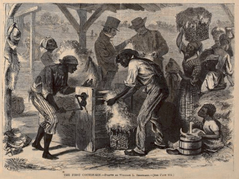
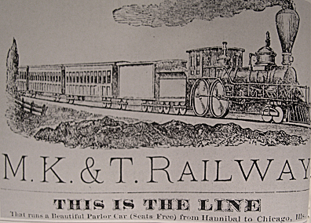
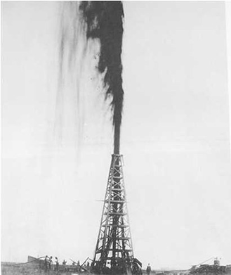
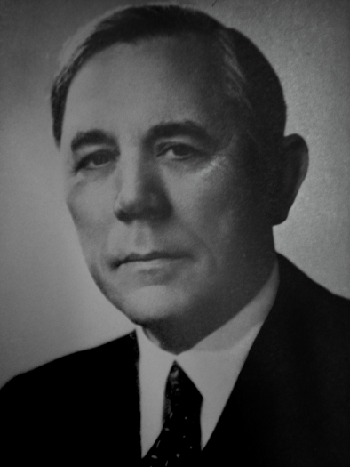
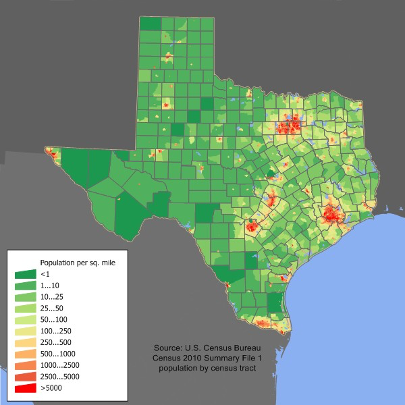
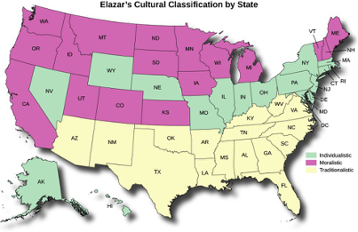
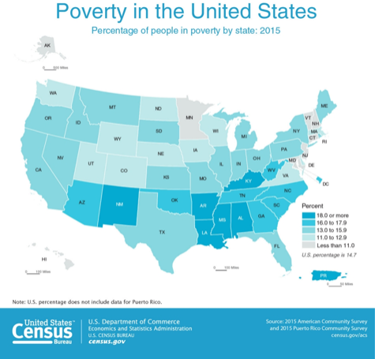

Module 2 Political Culture
Texas Political Culture
Industries That Shaped Texas Politics
Learning Objective
By the end of this section, you will be able to:
- Summarize the various industries that helped shape Texas politics
Introduction
Industries that shaped Texas politics include oil, cotton, cattle, lumber, and high technology.
Those industries have ebbed and flowed over time, which has been described as creative destruction. Today, Texas has a very diverse economy, with industries such as petroleum and natural gas, farming, steel, banking, health care, telecommunications, and tourism.
King Cotton
From the end of the Civil War through the turn of the century, cotton production increased dramatically as a result of several key developments. These included massive immigration from the deep South and Europe, removal of natives from prime cotton-growing areas, the invention of a new plow that more easily broke the thick black sod of the plains, the invention of barbed wire, the extension of railroads, the invention of cotton ginning, and perfection of cotton compressing at the side of railroads for easier shipping.
Almost no cotton was grown in the United States in 1787, the year the federal constitution was written. However, following the War of 1812, a huge increase in production resulted in the so-called cotton boom, and by midcentury, cotton became the key cash crop (a crop grown to sell rather than for the farmer’s sole use) of the southern economy and the most important American commodity.
The rapid expansion of the cotton industry in the Deep South after the invention of the cotton gin greatly increased demand for slave labor to pick cotton when it all ripened at once, and the Southern states continued as slave societies.

Figure 1.12 African slaves using the first cotton-gin, 1790-1800, drawn by William L. Sheppard. Image Credit: Illustration in Harper’s Weekly, 1869 Dec. 18, p. 813; Public Domain
By 1850, of the 3.2 million slaves in the country’s fifteen slave states, 1.8 million were producing cotton; by 1860, slave labor was producing over two billion pounds of cotton per year. Indeed, American cotton soon made up two-thirds of the global supply, and production continued to soar. By the time of the Civil War, South Carolina politician James Hammond confidently proclaimed that the North could never threaten the South because “cotton is king.”
“King Cotton” became a central feature of the Texas economy, attracting considerable investment capital, labor power, and technological development. Other industries within the broader agricultural sector also grew considerably in late nineteenth-century Texas, including ranching, timber, and corn. Still, cotton was king until the 1920s when it began a decades-long decline in importance caused by the drop in demand during the Great Depression, the loss of labor power during World War II, the rise of other centers of cotton production abroad, and federal efforts to hold down production to maintain prices.
Railroads

Figure 1.13 An advertisement for the Missouri-Kansas-Texas Railroad in 1881. The “Katy” was the first railroad to enter Texas from the north. Image Credit: Rcbutcher https://en.wikipedia.org/wiki/History_of_Texas Public Domain https://commons.wikimedia.org/wiki/File:Missouri-Kansas-Texas_Advertisement_1881.jpg
{kind=link}
As the railroads extended their reach in the late nineteenth century across the state to the panhandle and the high plains of West Texas, their influence grew. At first, the combination of more extensive railroad service and the relocation of cotton compresses from the seaports to rail sidings helped cotton farmers break the power of the port facility operators. But, hostility and political competition between farmers and ranchers on the one hand and the railroads on the other quickly grew.
Because railroads tend to be natural monopolies, they tended to exercise enormous market power over their customers–the farmers and ranchers. The railroads’ power to set rates was perceived as injurious to farmers and ranchers.
The struggle between railroads and their customers led to the victory of James Stephen Hogg in the gubernatorial election of 1890. Hogg ran chiefly on a populist platform whose main plank was the promise to regulate the railroads. In that same election, a proposed amendment to the Texas constitution was ratified that permitted the creation of a railroad regulating body that among other things would regulate freight rates. Hogg made the first appointments to the new Texas Railroad Commission in 1891. Three years later in 1894, the legislature made those positions elective.
The creation of the Railroad Commission represented the most significant and direct political clash between competing economic interests since the Civil War pitted slaveholding cotton growers against northern industrialists. Governor Hogg pushed through a series of laws, known as “Hogg’s Laws,” aimed at reining in the railroads, out-of-state corporations, and insurance companies.
The Texas Oil Boom and Bust

Figure 1.14 The Lucas Gusher https://upload.wikimedia.org/wikipedia/commons/d/d8/Lucas_gusher.jpg at Spindletop Hill, South of Beaumont, Texas. John Trost, Public Domain, Public Domain
{kind=link}
The Texas oil boom, sometimes called the gusher age, was a period of dramatic change and economic growth in the U.S. state of Texas during the early 20th century that began with the discovery of a large petroleum reserve near Beaumont, Texas. The find was unprecedented in its size and ushered in an age of rapid regional development and industrialization that has few parallels in U.S. history. Texas quickly became one of the leading oil- producing states in the U.S., along with Oklahoma and California; soon the nation overtook the Russian Empire as the top producer of petroleum. By 1940 Texas had come to dominate U.S. production. Some historians even define the beginning of the world’s Oil Age as the beginning of this era in Texas.
The major petroleum strikes that began the rapid growth in petroleum exploration and speculation occurred in Southeast Texas, but soon reserves were found across Texas and wells were constructed in North Texas, East Texas, and the Permian Basin in West Texas. Although limited reserves of oil had been struck during the 19th century, the strike at Spindletop near Beaumont in 1901 gained national attention, spurring exploration and development that continued through the 1920s and beyond.
Spindletop and the Joiner strike in East Texas, at the outset of the Great Depression, were the key strikes that launched this era of change in the state.
This period had a transformative effect on Texas. At the turn of the century, the state was predominantly rural with no large cities. By the end of World War II, the state was heavily industrialized, and the populations of Texas cities had broken into the top 20 nationally. The city of Houston was among the greatest beneficiaries of the boom, and the Houston area became home to the largest concentration of refineries and petrochemical plants in the world. The city grew from a small commercial center in 1900 to one of the largest cities in the United States during the decades following the era. This period, however, changed all of Texas’ commercial centers (and developed the Beaumont/Port Arthur area, where the boom began).
H. Roy Cullen, H. L. Hunt, Sid W. Richardson, and Clint Murchison were the four most influential businessmen during this era. These men became among the wealthiest and most politically powerful in the state and the nation.

Figure 1.15 H. Roy Cullen, industrialist and philanthropist, considered one of the key figures in the early Texas oil industry. ca. 1947. University of Houston Photography Department, Public Domain
Transportation
The creation of the Interstate Highway System, which was initiated under 1956 legislation creating the National System of Interstate and Defense Highways, was ostensibly for the rapid movement of troops and material for the defense of the national territory. The interstate highway system gave a considerable boost to the development of corporate chains. The prominence of numerous corporate chain companies among the state’s top employers in recent years confirms the symbiotic relationship of the dining and entertainment sector to the national highway system. The size of these corporate chains also reflects the explosion of suburbs and exurbs across the state, which was in turn facilitated by extensive highways.
The development of this emerging socio-economic complex–whose key components included petroleum, automobiles, highways, suburbanization, and chain retail and restaurants–was reinforced by forces already operating within the state. The Texas Good Roads and Transportation Association had already been established in 1932 to promote public expenditure on the building and maintenance of roads in Texas.
As early as 1946–well before President Eisenhower’s push for a national highway system–the Good Roads Association was instrumental in pushing through the 1946 “Good Roads Amendment” to the Texas Constitution. This amendment required that three-quarters of all revenue from state gasoline taxes be “used for the sole purpose of acquiring rights of way, constructing, maintaining, and policing… public roadways” and for the administration of traffic safety laws.
Technology
Although Texas-based companies are not so dominant in other economic sectors, they do represent some of the leading businesses in their industries. The high-technology sector includes such recognizable names as personal computer manufacturer Dell Computer Corporation (based in Round Rock, Texas), telecommunications giant AT&T (bought in 2005 by Southwestern Bell Communications headquartered in San Antonio), and chipmaker Texas Instruments (Dallas). All three companies are among the top 100 employers in Texas.
Silicon Hills is the nickname for the cluster of high-tech companies in the Austin metropolitan area. The name is analogous to Silicon Valley, but refers to the hilly terrain on the west side of Austin. High tech industries in the area include enterprise software, semiconductors, corporate R&D, biotechnology, the video game industry, and a variety of startup companies.
Technology companies with offices in the area include Advanced Micro Devices,Amazon.com ARM Holdings, AppleInc., Cisco, eBay, ESO, Facebook, Google, IBM, Indeed, Intel, PayPal, Procore, Silicon Labs, Texas Instruments, Oracle Corporation, VMWare, and many others. Dell’s worldwide headquarters are located in Round Rock, a suburb of Austin.
References and Further Reading
African Americans slaves using the First cotton-gin, 1790- 1800, by William L. Sheppard. Illustration in Harper’s Weekly, 1869 Dec. 18, p. 813. The Library of Congress, Card 91784966, Call Number: Illus. in AP2.H32 Case Y [P&P], Reproduction number: LC-USZ62-103801 (b&w film copy neg.), Medium: 1 print: wood engraving. CREATED/PUBLISHED: 1869 Dec. 18.
Olson, James Stuart (2001). Encyclopedia of the industrial revolution in America. Westport, CT: Greenwood Press. ISBN 978-0-313-30830-7. p.238.
Population of the 100 Largest Urban Places: 1900". U.S. Census Bureau. Retrieved November 3, 2009.
“Chapter Two: Galveston Bay” (PDF). Texas A&M University- Galveston: Galveston Bay Information Center (Galveston Bay Estuary Project). Archived from the original (PDF) on July 20, 2011. Retrieved September 8, 2009. “It [Galveston Bay] is at the center of the state’s petrochemical industry, with 30 percent of U.S. petroleum industry and nearly 50 percent of U.S. production of ethylene and propylene Occuring [sic] on its shores. Weisman (2008), p. 166, “The industrial megaplex that begins on the east side of Houston and continues uninterrupted to the Gulf of Mexico, 50 miles away, is the largest concentration of petroleum refineries, petrochemical companies, and storage structures on Earth.”
Licenses And Attributions
CC LICENSED CONTENT, ORIGINAL
Revision and Adaptation. Authored by: Kris S. Seago. License: CC BY: Attribution
Industries That Shaped American Politics: Revision and Adaptation. Authored by: John Osterman. License: CC BY: Attribution
##Texas’ Demographics
###Learning Objective
By the end of this section, you will be able to:
- Discuss how the demographic changes Texas is undergoing influences its government, public policy, and the challenges it faces today
Introduction
Texas is the second most populous U.S. state, second only to California. In recent decades, it has experienced strong population growth. Texas has many major cities and metropolitan areas, along with many towns and rural areas. Much of the population is in the major cities of Houston, San Antonio, Dallas, Fort Worth, Austin, and El Paso. Three Texas cities (Houston, Dallas, and San Antonio) are among the nation’s top 10 in population, and Austin is just outside the top 10 at number 11.
Population
The United States Census Bureau estimates the population of Texas was 28,995,881 on July 1, 2019, a 15.31 percent increase since the 2010 United States Census. The 2010 US Census recorded Texas as having a population of
25.1 million—an increase of 4.3 million since the year 2000, involving an increase in population in all three subcategories of population growth: natural increase (births minus deaths), net immigration, and net migration. The state passed New York in the 1990s to become the second-largest U.S. state in population, after California.
Texas’ population growth between 2000 and 2010 represents the highest population increase, by number of people, for any U.S. state during this time period. The state has a bigger population than that of Australia.

Figure 1.16 Population density map of Texas created using 2010 Census Data. Image Credit: JimIrwin, CC-BY-SA-3.0
As of 2015, Texas had 4.7 million foreign-born residents, about 17% of the population and 21.6% of the state workforce. The major countries of origin for Texan immigrants were Mexico (55.1% of immigrants), India (5%), El Salvador (4.3%), Vietnam (3.7%), and China (2.3%). Of immigrant residents, some 35.8 percent were naturalized U.S. citizens. In 2014, there were an estimated 1.7 million undocumented immigrants in Texas, making up 35% of the total Texas immigrant population and 6.1% of the total state population.[209] In addition to the state’s foreign-born population, an additional 4.1 million Texans (15% of the stats’s population) were born in the United States and had at least one immigrant parent.
U.S. Census data from 2010 indicate that 7.7% of Texas’ population is under 5 years old, 27.3% is under 18, and 10.3% is aged 65 and older. Females make up 50.4% of the population.
Texas expects to record another decade of population growth in the 2020 Census.
You Might Be Wondering …
Where is Texas’ growing population coming from?
Texas is growing at a rate of 1,000 people per day, and for the second year in a row, most of the people who moved to the state came from other countries in 2018. And the biggest growth in international migration isn’t from Latin America.
Find out more from Texplainer at the Texas Tribune.
Ethnicity
As of the 2010 US Census, the racial distribution in Texas was as follows: 70.4% of the population of Texas was White American; 11.8% African American; 3.8%, Asian American; 0.7%, American Indian; 0.1%, native Hawaiian or Pacific islander only; 10.5% of the population were of some other race only; and 2.7% were of two or more races. Hispanics (of any race) were 37.6% of the population of the state, while Non-Hispanic Whites composed 45.3%. English Americans predominate in eastern, central, and northern Texas; German Americans, in central and western Texas. African Americans, who historically made up one-third of the state population, are concentrated in parts of northern, eastern and east central Texas as well as in the Dallas-Fort Worth, San Antonio and Houston metropolitan areas.
As in other Southern states settled largely in the 19th century, the vast majority have European ancestry: Irish, English and German. Texas includes a diverse set of European ancestries, due both to historical patterns of settlement as well as contemporary dynamics. Frontier Texas saw settlements of Germans, particularly in Fredericksburg and New Braunfels. Many Romanians, Dutch, Germans from Switzerland and Austria, Poles, Russians, Swedes, Norwegians, Czechs, Slovaks, Italians, and French immigrated at least in part because of the European revolutions of 1848. This immigration continued until World War I and the 1920s. The influence of these diverse European immigrants survives in the town names, architectural styles, music, and cuisine in Texas.
Hispanic Texans
As of 2010, 37% of Texas residents had Hispanic ancestry; these include recent immigrants from Mexico, Central America, and South America, as well as Tejanos, whose ancestors have lived in Texas as early as the 1700s. Tejanos are the largest ancestry group in southern Duval County and amongst the largest in and around Bexar County, including San Antonio, where over one million Hispanics live. The state has the second largest Hispanic population in the United States, behind California.
Hispanics dominate southern, south-central, and western Texas and form a significant portion of the residents in the cities of Dallas, Houston, and Austin. The Hispanic population contributes to Texas having a younger population than the American average, because Hispanic births have outnumbered non-Hispanic white births since the early 1990s. In 2007, for the first time since the early nineteenth century, Hispanics accounted for more than half of all births (50.2%), while non-Hispanic whites accounted for just 34%.
In 2016 the state had 59,115 persons of Cuban origin. 6,157 of them lived in Travis County.
African-American Texans
Texas has one of the largest African-American populations in the country. African Americans are concentrated in northern, eastern and east-central Texas as well as the Dallas, Houston, and San Antonio metropolitan areas. African Americans form 24% of both the cities of Dallas and Houston, 19% of Fort Worth, 8.1% of Austin, and 6.9% of San Antonio. They form a majority in sections of eastern San Antonio, southern Dallas, eastern Fort Worth, and southern Houston. A strong labor market between 1995 and 2000 contributed to Texas being one of three states in the South receiving the highest numbers of black college graduates in a New Great Migration.
Asian-American Texans
In recent years, the Asian American population in Texas has grown, especially in west Houston, Fort Bend County southwest of Houston, the western and northern suburbs of Dallas, and Arlington near Fort Worth. Vietnamese Americans, South Asian Americans, Chinese Americans, Filipino Americans, Korean Americans, and Japanese Americans make up the largest Asian American groups in Texas. The Gulf Coast also has large numbers of Asian Americans, because the shrimp fishing industry attracted tens of thousands of Vietnamese, Filipinos, and Chinese from the coast of the South China Sea in the late 1970s and 1980s
References and Resources
Texas Population 2017 Archived 2017-01-21 at the Wayback Machine. World Population Review
“United State Census Bureau”. 2008-2012 American Community Survey 5-Year Estimates. Archived from the original on 2014-08-15. Retrieved Feb 28, 2014.
“Pew Research Center”. Archived from the original on 2014- 02-21. Retrieved Feb 28, 2014.
Bagden, Samantha. “Cubans in Texas see some hope in new relations” (Archive) Austin American-Statesman. Monday, January 18, 2016. Retrieved on January 19, 2016.
William H. Frey, “The New Great Migration: Black Americans’ Return to the South, 1965-2000”, May 2004, The Brookings Institution, p.1 Archived April 28, 2008, at the Wayback Machine.
Licenses And Attributions
CC LICENSED CONTENT, ORIGINAL
Revision and Adaptation. Authored by: Kris S. Seago. License: CC BY: Attribution
Texas Demographics: Revision and Adaptation. Authored by: John Osterman. License: CC BY: Attribution
State Political Culture
Learning Objective
By the end of this section, you will be able to:
- Discuss how the political culture of Texas influences its government, public policy, and the challenges it faces today
Introduction: Daniel Elazar’s Cultural Classification
Some states, such as Alaska, are endowed with natural resources. They can use their oil or natural gas reserves to their advantage to fund education or reduce taxes. Other states, like Florida, are favored with a climate that attracts tourists and retirees each winter, drawing in revenues to support infrastructure improvements throughout the state. These differences can lead to strategic advantages in the economic fortunes of a state, which can translate into differences in the levels of taxes that must be collected from citizens.
But their economic fortunes are only one component of what makes individual states unique. Theorists have long proposed that states are also unique as a function of their differing political cultures, or their attitudes and beliefs about the functions and expectations of the government. In the book, American Federalism: A View from the States, Daniel Elazar first theorized in 1966 that the United States could be divided into three distinct political cultures: moralistic, individualistic, and traditionalistic. The diffusion of these cultures throughout the United States is attributed to the migratory patterns of immigrants who settled in and spread out across the country from the east to the west coast. These settlers had distinct political and religious values that influenced their beliefs about the proper role of government, the need for citizen involvement in the democratic process, and the role of political parties.

Figure 1.17 Daniel Elazar posited that the United States can be divided geographically into three types of political cultures—individualistic, moralistic, and traditionalistic—which spread with the migratory patterns of immigrants across the country.
Moralistic Political Culture
In Elazar’s framework, states with a *moralistic political culture see the government as a means to better society and promote the general welfare. They expect political officials to be honest in their dealings with others, put the interests of the people they serve above their own, and commit to improving the area they represent. The political process is seen in a positive light and not as a vehicle tainted by corruption. In fact, citizens in moralistic cultures have little patience for corruption and believe that politicians should be motivated by a desire to benefit the community rather than by a need to profit financially from service.
Moralistic states thus tend to support an expanded role for government. They are more likely to believe government should promote the general welfare by allocating funds to programs that will benefit the poor. In addition, they see it as the duty of public officials to advocate for new programs that will benefit marginal citizens or solve public policy problems, even when public pressure to do so is nonexistent.
The moralistic political culture developed among the Puritans in upper New England. After several generations, these settlers moved westward, and their values diffused across the top of the United States to the upper Great Lakes. In the middle of the 1800s, Scandinavians and Northern Europeans joined this group of settlers and reinforced the Puritans’ values. Together, these groups pushed further west through the northern portion of the Midwest and West and then along the West Coast.
States that identify with this culture value citizen engagement and desire citizen participation in all forms of political affairs. In Elazar’s model, citizens from moralistic states should be more likely to donate their time and/or resources to political campaigns and to vote. This occurs for two main reasons. First, state law is likely to make it easier for residents to register and to vote because mass participation is valued. Second, citizens who hail from moralistic states should be more likely to vote because elections are truly contested. In other words, candidates will be less likely to run unopposed and more likely to face genuine competition from a qualified opponent. According to Elazar, the heightened competition is a function of individuals’ believing that public service is a worthwhile endeavor and an honorable profession.
Individualistic Political Culture
States that align with Elazar’s individualistic political culture see the government as a mechanism for addressing issues that matter to individual citizens and for pursuing individual goals. People in this culture interact with the government in the same manner they would interact with a marketplace. They expect the government to provide goods and services they see as essential, and the public officials and bureaucrats who provide them expect to be compensated for their efforts. The focus is on meeting individual needs and private goals rather than on serving the best interests of everyone in the community. New policies will be enacted if politicians can use them to garner support from voters or other interested stakeholders, or if there is great demand for these services on the part of individuals.
According to Elazar, the individualist political culture originated with settlers from non-Puritan England and Germany. The first settlements were in the mid-Atlantic region of New York, Pennsylvania, and New Jersey and diffused into the middle portion of the United States in a fairly straight line from Ohio to Wyoming.
Given their focus on pursuing individual objectives, states with an individualistic mindset will tend to advance tax breaks as a way of trying to boost a state’s economy or as a mechanism for promoting individual initiative and entrepreneurship. For instance, New Jersey governor Chris Christie made headlines in 2015 when discussing the incentives he used to attract businesses to the state. Christie encouraged a number of businesses to move to Camden, where unemployment has risen to almost 14 percent, by providing them with hundreds of millions of dollars in tax breaks. The governor hopes these corporate incentives will spur job creation for citizens who need employment in an economically depressed area of the state.
Since this theoretical lens assumes that the objective of politics and the government is to advance individual interests, Elazar argues that individuals are motivated to become engaged in politics only if they have a personal interest in this area or wish to be in charge of the provision of government benefits. They will tend to remain involved if they get enjoyment from their participation or rewards in the form of patronage appointments or financial compensation. As a result of these personal motivations, citizens in individualistic states will tend to be more tolerant of corruption among their political leaders and less likely to see politics as a noble profession in which all citizens should engage.
Finally, Elazar argues that in individualistic states, electoral competition does not seek to identify the candidate with the best ideas. Instead it pits against each other political parties that are well organized and compete directly for votes. Voters are loyal to the candidates who hold the same party affiliation they do. As a result, unlike the case in moralistic cultures, voters do not pay much attention to the personalities of the candidates when deciding how to vote and are less tolerant of third-party candidates.
Traditionalistic Political Culture
Given the prominence of slavery in its formation, a traditionalistic political culture, in Elazar’s argument, sees the government as necessary to maintaining the existing social order, the status quo. Only elites belong in the political enterprise, and as a result, new public policies will be advanced only if they reinforce the beliefs and interests of those in power.
Elazar associates traditionalistic political culture with the southern portion of the United States, where it developed in the upper regions of Virginia and Kentucky before spreading to the Deep South and the Southwest. Like the individualistic culture, the traditionalistic culture believes in the importance of the individual. But instead of profiting from corporate ventures, settlers in traditionalistic states tied their economic fortunes to the necessity of slavery on plantations throughout the South.
When elected officials do not prioritize public policies that benefit them, those on the social and economic fringes of society can be plagued by poverty and pervasive health problems. For example, although the map below shows that poverty is a problem across the entire United States, the South has the highest incidence.
According to the Centers for Disease Control and Prevention, the South also leads the nation in self-reported obesity, closely followed by the Midwest. These statistics present challenges for lawmakers not only in the short term but also in the long term because they must prioritize fiscal constraints in the face of a growing demand for services.

Figure 1.18 Poverty in the United States
While moralistic cultures expect and encourage political participation by all citizens, traditionalistic cultures are more likely to see it as a privilege reserved for only those who meet the qualifications. As a result, voter participation will generally be lower in a traditionalistic culture, and there will be more barriers to participation (e.g., a requirement to produce a photo ID at the voting booth).
Conservatives argue that these laws reduce or eliminate fraud on the part of voters, while liberals believe they disproportionally disenfranchise the poor and minorities and constitute a modern-day poll tax.
Finally, under a traditionalistic political culture, Elazar argues that party competition will tend to occur between factions within a dominant party. Historically, the Democratic Party dominated the political structure in the South before realignment during the civil rights era. Today, depending on the office being sought, the parties are more likely to compete for voters.
Texas Political Culture and Elazar’s Theory
Elazar’s Theory claims that Texas is a mixture of traditional and individualistic political cultures. As a result, the voter turnout in Texas is lower than most other American states, with the argument that Texans view political participation as an economic perk versus the value of contributing to society.
Critiques of Elazar’s Theory
Several critiques have come to light since Elazar first introduced his theory of state political culture fifty years ago. The original theory rested on the assumption that new cultures could arise with the influx of settlers from different parts of the world; however, since immigration patterns have changed over time, it could be argued that the three cultures no longer match the country’s current reality.
Today’s immigrants are less likely to come from European countries and are more likely to originate in Latin American and Asian countries. In addition, advances in technology and transportation have made it easier for citizens to travel across state lines and to relocate. Therefore, the pattern of diffusion on which the original theory rests may no longer be accurate, because people are moving around in more, and often unpredictable, directions.
It is also true that people migrate for more reasons than simple economics. They may be motivated by social issues such as widespread unemployment, urban decay, or low-quality health care of schools. Such trends may aggravate existing differences, for example the difference between urban and rural lifestyles (e.g., the city of Atlanta vs. other parts of Georgia), which are not accounted for in Elazar’s classification. Finally, unlike economic or demographic characteristics that lend themselves to more precise measurement, culture is a comprehensive concept that can be difficult to quantify. This can limit its explanatory power in political science research.
References and Further Reading
Daniel Elazar. 1972. American Federalism: A View from the States, 2nd ed. New York: Thomas Y. Crowell Company.
Dean DeChiaro, “$830M in Tax Breaks Later, Christie Says His Camden Plan Won’t Work for America,” U.S. News and World Report, 19 August 2015.
“Division of Nutrition, Physical Activity, and Obesity: Data, Trends and Maps” (March 14, 2016).
Jie Zong and Jeanne Batalova. 26 February 2015. “Frequently Requested Statistics on Immigrants and Immigration in the United States.”
Licenses and Attributions
CC LICENSED CONTENT, ORIGINAL
Revision and Adaptation. Authored by: Daniel M. Regalado. License: CC BY: Attribution
CC LICENSED CONTENT, SHARED PREVIOUSLY
American Government. Authored by: OpenStax. Provided by: OpenStax; Rive University. License: License: CC BY: Attribution